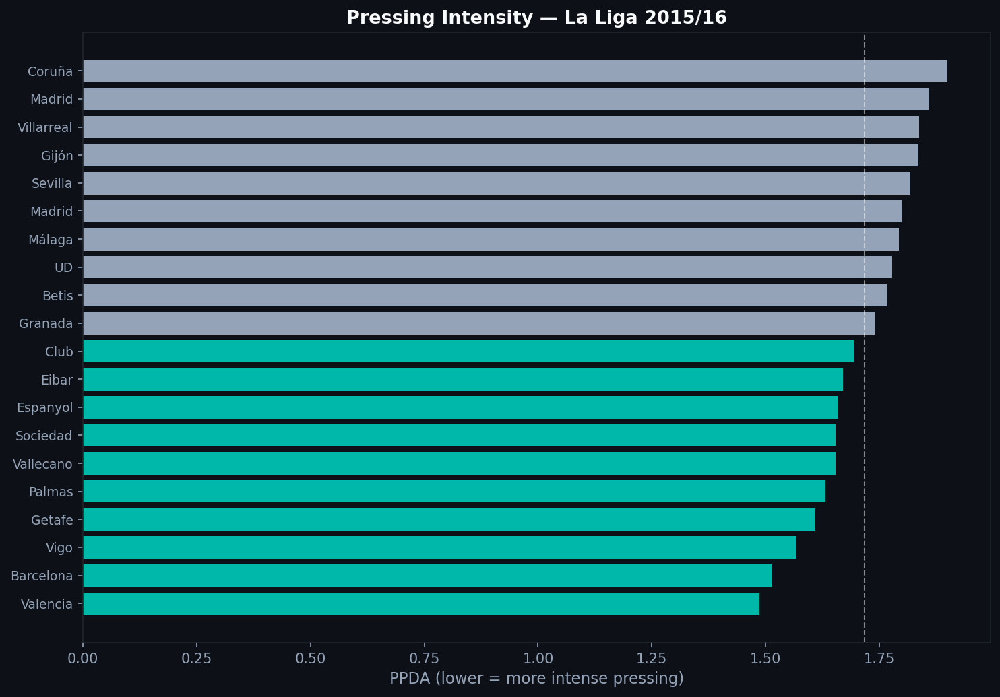
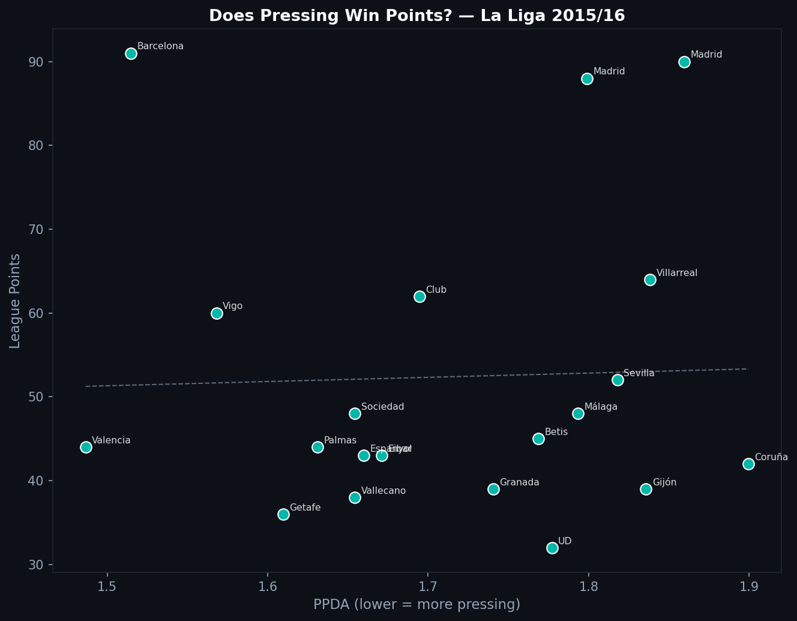

2.2 — Pressing in Numbers: What Is PPDA?
Every team presses. But not every team presses the same way. PPDA turns the vague idea of "pressing intensity" into a concrete number.
What PPDA Measures
PPDA stands for Passes Per Defensive Action. The formula:
Defensive actions include pressures, tackles, interceptions, and blocks executed in the opponent's half. A low PPDA means the pressing team wins the ball quickly. A high PPDA means the opponent circulates freely.
La Liga 2015/16 Rankings

Teal bars are teams with below-median PPDA — pressing more intensely than average. Barcelona and Athletic Club sit near the top of pressing intensity. Athletic's press under Bielsa was already a reference point in European football. Barcelona's gegenpressing complemented their possession game with aggressive ball recovery.
Does Pressing Win Points?

The trend slopes downward — teams with lower PPDA (more pressing) tend to accumulate more points. But the relationship is not clean. Several high-pressing teams had mediocre seasons, and several deeper-block teams performed well.
Pressing intensity and pressing quality are different things. PPDA measures how often you press, not how well-coordinated those actions are. A team can press frequently and chaotically. Another can press less often in well-organized traps. PPDA sees the former as the more intense presser.
Implementation
DEFENSIVE_ACTIONS = {'Pressure', 'Tackle', 'Interception', 'Block'}
for match_id in matches['match_id']:
raw = load_events(match_id)
df = flatten_events(raw)
opp_passes_deep = df[
(df['team'] == opp_team) &
(df['type'] == 'Pass') &
(df['x'] < 40) # opponent's defensive third
]
press_actions = df[
(df['team'] == pressing_team) &
(df['type'].isin(DEFENSIVE_ACTIONS)) &
(df['x'] > 60) # in opponent's half
]
ppda = len(opp_passes_deep) / max(len(press_actions), 1)
The x thresholds follow the Statsbomb coordinate system (120-yard pitch).
Limits
PPDA does not weight pressing actions by outcome. A pressure that wins the ball counts the same as one that fails. It also does not capture pressing shape: the positioning and compactness that make a press possible before the first touch. More sophisticated metrics look at recovery rates and time-to-press, but PPDA is the standard starting point.
Full notebook available in the GitHub repository
Data: Statsbomb Open Data — La Liga 2015/16, 380 matches.
Series 2 — Tactical Analysis